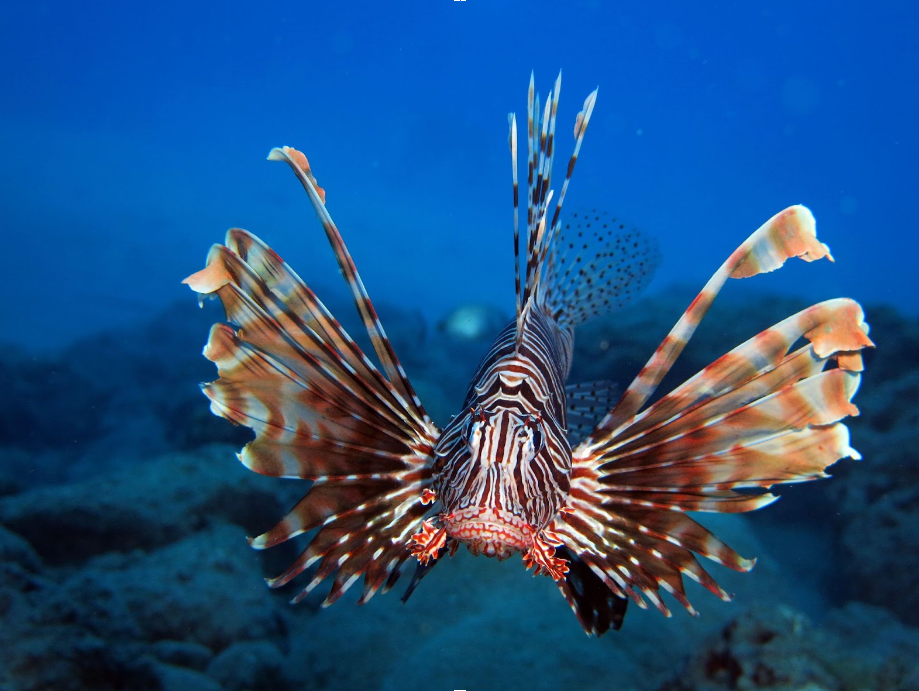

Dragefisken kommer oprindeligt fra området kaldet Indo-Pacific, og er
derfor en invasiv art i det Caribbiske hav. Den første dragefisk blev
set i 1985 uden for Florida’s kyst, og menes at have endt der, ved at
en sjælden fisk samler havde valgt at smide den i havet. Dragefisk har
let ved at sprede sig, og de caribiske koralrev er et optimalt
økosystem for det lille rovdyr.